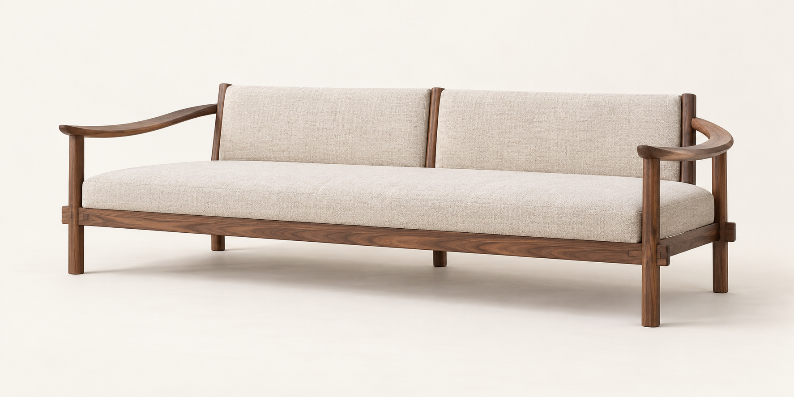
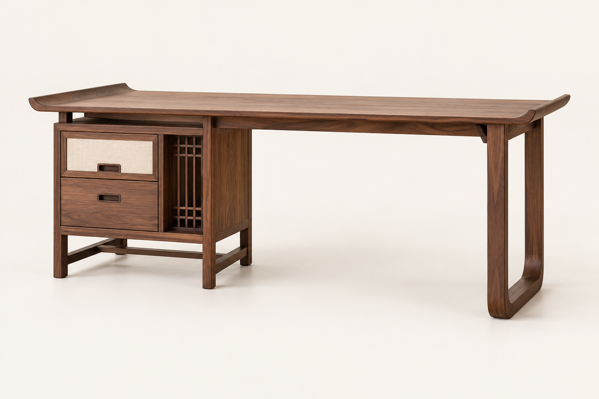
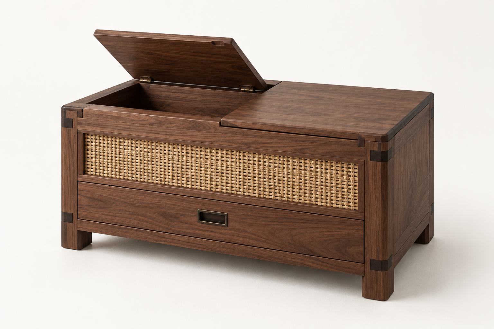
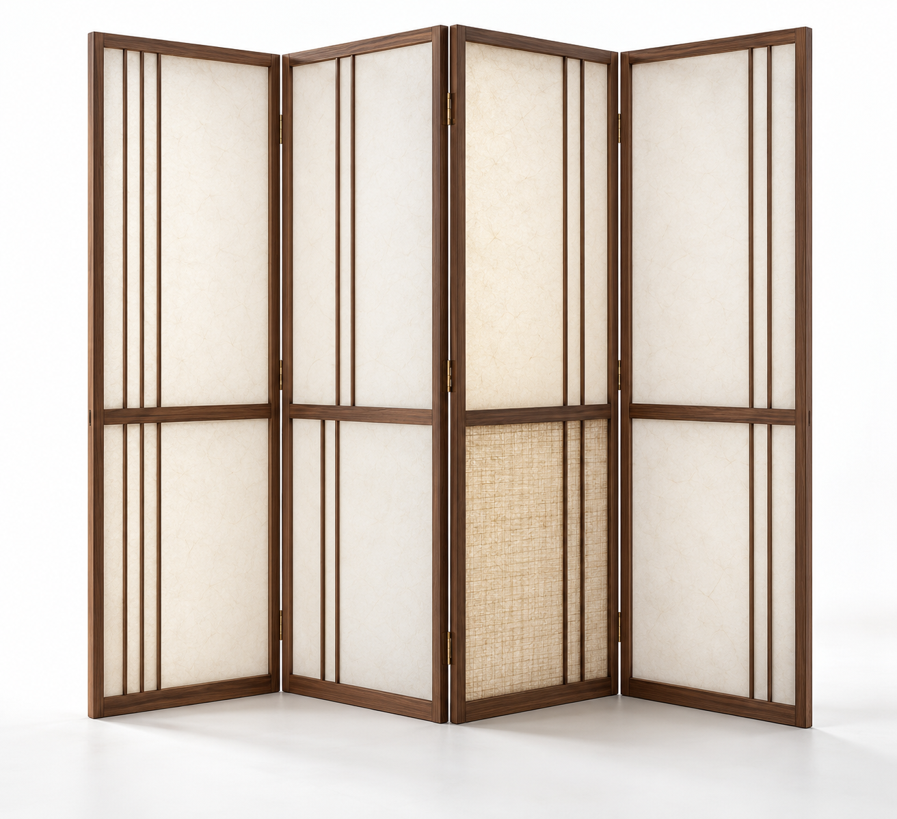
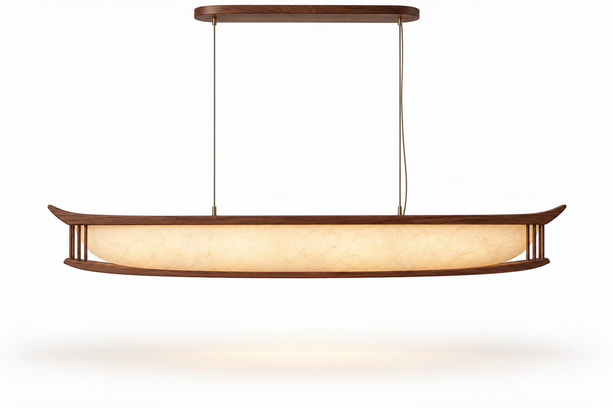

Living
평상과 소파 사이
낮게 앉는 감각과 충분한 등받이를 함께 둔 거실 가구입니다.
Korean Contemporary Furniture
안쪽의 고요함을 닮은 가구
창호의 선, 목재의 결, 낮은 생활의 비례를 오늘의 집에 맞게 다시 다듬습니다. 오래 머무는 물건이 공간의 호흡을 바꾼다는 믿음에서 시작합니다.

Quiet Presence
ANTTEUL은 전통 가구의 낮은 중심과 여백, 문살의 리듬, 한지와 라탄이 주는 부드러운 투과감을 현대적인 구조로 옮깁니다.
모든 제품은 집 안에서 오래 쓰이는 장면을 기준으로 설계됩니다. 손끝에 닿는 모서리, 열고 닫히는 속도, 빛이 지나가는 결까지 천천히 조율합니다.
Collection

Living
낮게 앉는 감각과 충분한 등받이를 함께 둔 거실 가구입니다.

Storage
문살, 라탄, 목재 면의 대비로 물건을 차분히 감춥니다.

Light & Room
한지의 질감과 살대의 간격으로 공간의 깊이를 만듭니다.

Material & Making
안뜰의 조형은 선을 크게 덜어내고, 손이 닿는 부분에만 조용한 장식을 남깁니다. 결구는 구조가 되고, 문살은 빛의 간격이 되며, 직물과 한지는 계절의 온도를 받아들입니다.
Pieces
Table
넓은 상판과 좌측 수납을 결합한 서재용 책상
Seating
평상처럼 낮고 소파처럼 편안한 거실 좌석
Storage
앉음과 수납을 겸한 현관 및 침실용 장
Partition
빛을 부드럽게 나누는 접이식 공간 가림막
Lighting
식탁 위에 잔잔한 빛을 놓는 한지 펜던트
Cabinet
거실과 서재를 위한 높은 수납장
Custom Atelier
평면, 채광, 기존 가구의 톤을 함께 확인합니다.
높이와 깊이, 손잡이 위치까지 생활 동선에 맞춥니다.
마감 샘플 확인 후 제작하고 설치까지 연결합니다.
Inquiry
제품 상담, 사이즈 조정, 공간별 제안 요청을 남겨주시면 ANTTEUL 스튜디오에서 순서대로 연락드립니다.
아직 선택된 제품이 없습니다.